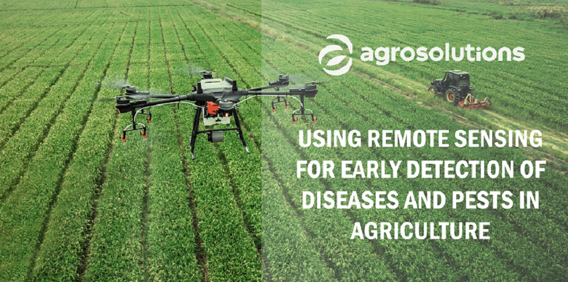
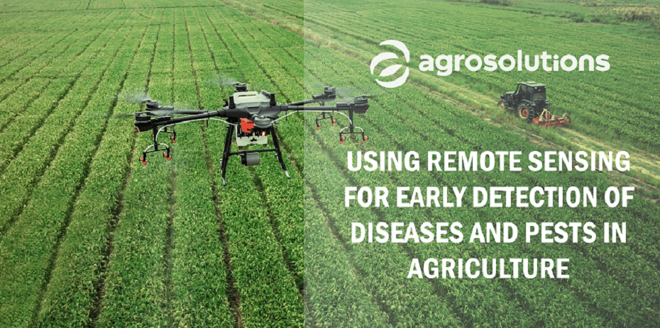

Climate Change Resilience
Climate change brings unpredictability to weather patterns, making it challenging for
farmers to adapt. Extreme weather events, such as droughts and floods, can have
devastating effects on crops.
Increased frequency of floods can result in waterlogging, soil erosion, and loss of valuable topsoil, impacting long-term soil fertility.
Changes in traditional growing seasons challenge farmers to adapt their cultivation practices and may lead to crop failures.
Variability in weather conditions poses a significant risk for farmers who rely on consistent climate patterns for successful harvests.
Pest and Disease Management
Controlling pests and diseases in agriculture is crucial for ensuring high yields and food quality. However, overuse of pesticides can harm the environment and increase production costs. Identifying and treating issues early is a significant challenge.Insects, fungi, bacteria, and other pests can devastate crops by feeding on plants, transmitting diseases, and reducing overall crop health.
Controlling pests while minimizing the use of chemical pesticides is an ongoing challenge, as overuse can lead to pesticide-resistant strains.
Pesticide resistance in pests necessitates the development and adoption of alternative, sustainable pest management strategies.
Frequent outbreaks of diseases in crops, exacerbated by changing climate conditions, pose a constant threat to food security.
Irrigation systems
Irrigation profoundly shapes the landscape of agriculture by ensuring a reliable water supply for crops, directly influencing their growth, yield, and quality. In regions with unpredictable rainfall, irrigation serves as a crucial risk mitigation strategy, offering farmers control over water availability and fostering stability in crop production. Beyond increasing yields, irrigation facilitates the extension of growing seasons, enabling diverse crop cultivation and contributing to economic stability. The efficiency of modern irrigation technologies not only optimizes water usage but also enhances soil fertility and nutrient management. In essence, irrigation stands as a cornerstone of sustainable agriculture, promoting resilience, productivity, and food security in the face of environmental variability.
Crop and soil monitoring
Soil monitoring significantly affects farming by providing farmers with crucial information to make informed decisions and optimize agricultural practices. By understanding soil nutrient levels, pH, moisture content, and other key parameters, farmers can implement precise fertilization and irrigation strategies, thereby maximizing crop yields. Monitoring soil structure and compaction helps prevent issues that could hinder root growth and water infiltration. The data-driven insights from soil monitoring contribute to more efficient resource use, reduced environmental impact, and improved overall soil health. Ultimately, soil monitoring plays a pivotal role in promoting sustainable farming practices, enhancing productivity, and ensuring the long-term viability of agricultural systems.


 
